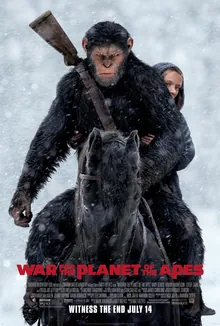

The genetics
Genetics is the premise of the rebooted Planet of the Apes series rather than a subject of this film. The intelligent apes and the near-extinction of humanity both stem from the laboratory-made virus of the earlier films; here the virus has mutated and causes infected humans to lose speech and higher intelligence, a reversal in which humans regress while apes advance. The Colonel answers it with mass killing of carriers, including his own son, which sets him against the rest of the military, who believe a cure is possible; his fear of a humanity reduced to beasts drives his war on the apes. No scientist appears and no genetic work is done in the film. The virus behaves as plot logic rather than real virology.
How genetics is portrayed
- Overall portrayal of genetics
- negative The legacy of the earlier genetic work is a mutating plague degrading humanity and a war that buries both human armies; no practitioner appears to offset it.
- Outcome of the genetic intervention
- negative The laboratory-born virus of the series has mutated to strip humans of speech and intelligence, leading the Colonel to kill carriers and wage war on the apes.
The story
Two years after the battle of San Francisco, a paramilitary unit, Alpha-Omega, hunts Caesar's apes with the help of enslaved apes. Its leader, the Colonel, raids the ape colony and kills Caesar's wife and elder son. While the tribe sets out for a distant oasis, Caesar goes after the Colonel with a few companions, adopting on the way a mute human girl whom they name Nova, and meeting Bad Ape, a talking chimpanzee who has lived alone. At the Colonel's mountain base Caesar finds his tribe enslaved and is captured himself. The Colonel explains that the virus has mutated and now robs humans of speech and intelligence; he killed his own infected son and orders carriers shot, which has brought the rest of the army against him. Infected through Nova's doll, the Colonel kills himself. As the army attacks, Caesar blows up a fuel tank, an avalanche buries both human forces, and the apes reach the oasis, where Caesar dies of his wounds.